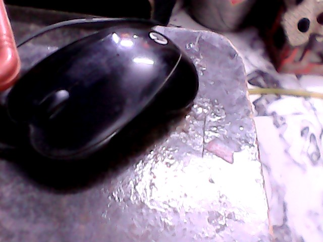
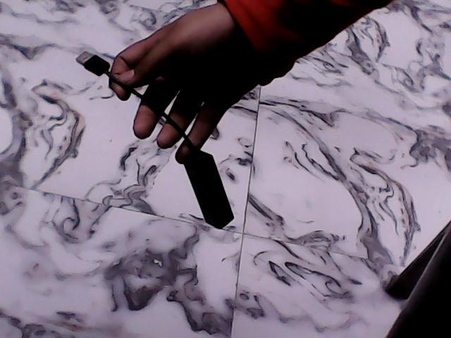
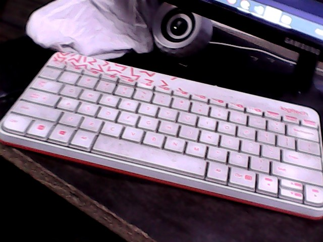

Test Image-

Output on GOOGLE LENS - HP 1000 wired optical mouse
Output on MobileNet Model - Crash helmet
Result -Google Lens Is More Accurate
Test Image-

Output on GOOGLE LENS - 4 in 1 usb hub
Output on MobileNet Model - Abaya
Result -Google Lens Is More Accurate
Test Image-

Output on GOOGLE LENS - Logitech MK240 nano usb witeless keybord
Output on MobileNet Model - computer keybord,keypad
Result -Google Lens Is More Accurate
Test Image-

Output on GOOGLE LENS - Wifi reliance jio fiber
Output on MobileNet Model - Safty pin
Result -Google Lens Is More Accurate
Test Image-